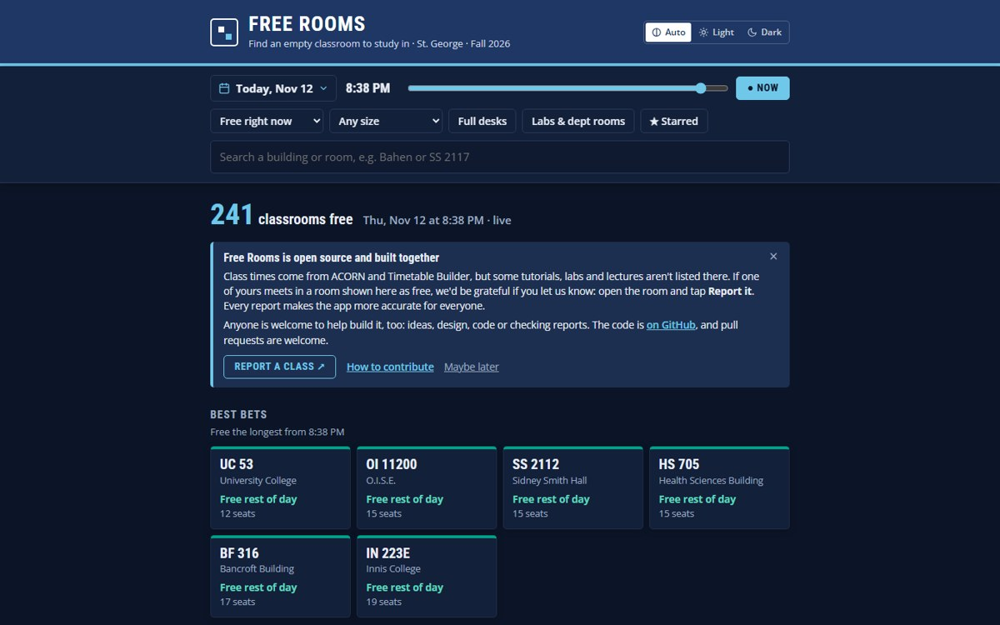

Free Rooms
A web app that shows UofT St. George students which classrooms are empty right now. It covers 516 rooms and more than 6,800 weekly class meetings, merged from three university data sources.
- A room that might be booked is never shown as free.
- Python data pipelines, a React front end, 50+ unit tests and CI/CD.
- Built with agentic AI: I directed Claude Code from the idea to the deployed product.